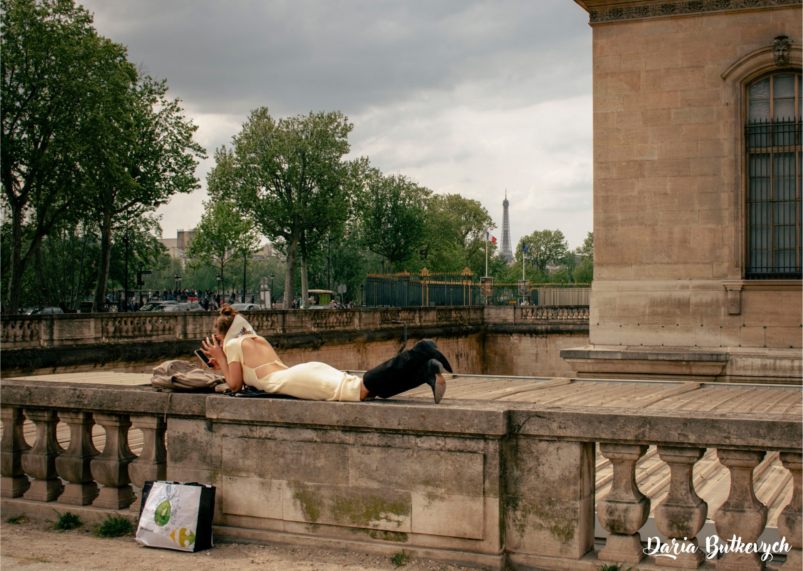
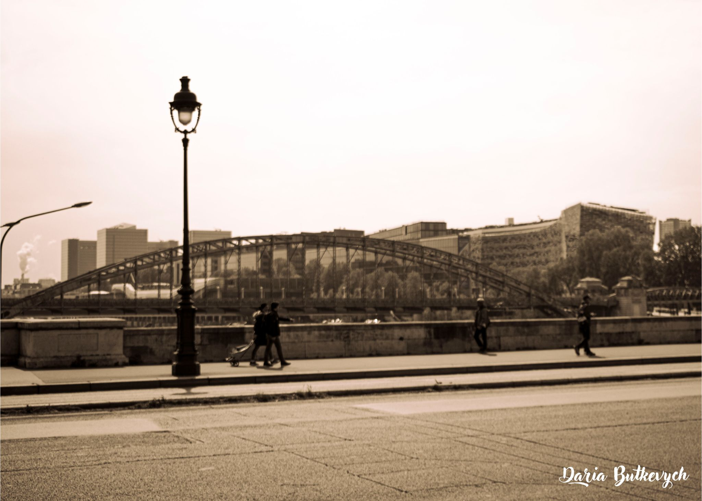
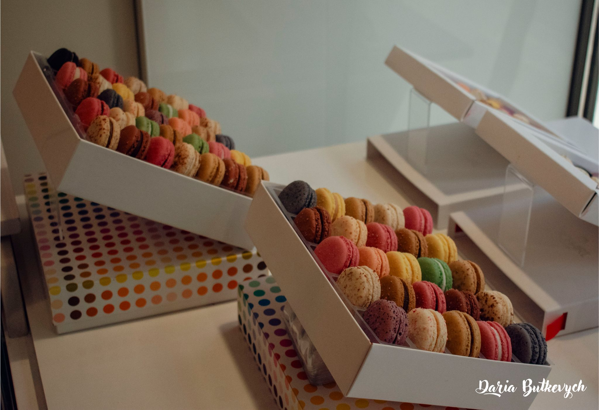

Тут була я!
З дитинства моя мама завжди звертала увагу на мій зовнішній
вигляд.
Ви ніколи не дізнаєтесь, що з цього правда, а що — вигадка. Але саме це й робить мою виставку особливою. Ще з дитинства я мріяла побачити світ, та мій гаманець постійно був на нулі. Коли ж я почала заробляти і мандрувати, світ раптом почав зберігатися в тисячах кадрів. Їх бачила тільки моя мама — саме вона казала:
"Через твої фото здається, ніби я побувала там разом із тобою."
Ці слова стали поштовхом. Я захотіла дати це відчуття не тільки їй, а кожному, хто зазирне сюди. Ця виставка — не просто фото. Це історії, спогади, вигадки й сни, приправлені почуттями. Тут немає чіткої межі між реальністю та фантазією. Тож дозволь собі загубитися в цьому просторі — і, можливо, знайти щось своє.
Confessions from Paris
У Парижі я вперше стала собою. Серед шумних вулиць, аромату круасанів
і шепоту Сени я навчилася слухати власне серце. Це було моє перше
справжнє кохання — місто, яке змусило мене жити і мріяти по-новому.
Париж не просто зачаровує. Він змінює.
Паризькі одкровення: мої думки ♥
Плейлист ♬
З дитинства моя мама завжди звертала увагу на мій зовнішній
вигляд.
Вона сиділа в машині і дивилась, як сонце повільно ковзає за обрій. Колись це були лише мрії. Пусті фантазії, викладені на полях щоденника. А зараз вона в таксі, прямує до своєї квартири в передмісті Парижа — поруч із людиною, яку називає чоловіком. Вона дивилась на цей захід, ніби в дзеркало минулого. Згадувала, як вперше приїхала сюди. Як уперше побачила цей вечірній вогонь над містом. Як уперше закохалася. І подумала: іноді, щоб бути щасливою — деяким мріям краще залишатись мріями. А потім затор почав розчинятися. Машини попрямували в різних напрямках, і таксі, проїхавши повз мене, почало повільно зникати в потоці. І я так і не дізналась історію дівчини, яка дивилася на захід сонця.
Париж — місто свободи самовираження. Тут можна зустріти всіх: від людей із натуральним волоссям до тих, хто сміливо носить кислотні кольори. Всі вони приміряють образи — від рваних джинсів у стилі панк до вишуканих суконь. Хтось іде неквапливо, насолоджуючись моментом, хтось біжить у справах. Одні співають на вулицях, інші працюють у модних офісах. Це місто живе різноманіттям. Саме тоді, коли я замислилась про це, я побачила її — дівчину з іншого століття. Вона спокійно лежала на парапеті перед входом до Лувру з газетою в руках. На ній була елегантна жовта сукня і легка шовкова хусточка, зав’язана у стилі 50-х чи 60-х. Весь її образ випромінював спокій і витончену відстороненість. І лише пакет з найближчого супермаркету нагадував, що вона таки з нашого часу. Париж і справді дивовижний. Тут можна побувати у минулому, просто примірявши образ дівчини з іншого століття.
На радість не чекають — радість створюють. Блукаючи вулицями Парижа, хочеш — не хочеш, а натрапиш на архітектурну досконалість. Тут навіть звичайні житлові будинки виглядають так, ніби їх створив геній. Я йшла і не встигала ховати камеру — варто було лише повернути голову, як відкривався новий кадр. Місто не давало спокою — воно постійно щось дарувало. А потім я побачила дітей. Вони сміялися, ганяючись за мильними кульками. Їхня радість була така справжня, така знайома… Саме такою була і моя, у моєму невеличкому містечку. Я зупинилась. І на мить просто раділа разом із ними. Бо радість доступна всюди — у місті-музеї, і в маленькому українському містечку.
Тяжко повірити, що це фото зроблене у 2022 році. Магія фотографії — у здатності маніпулювати часом, речами, навіть людьми. Редактори стали нашими чарівними паличками. Колись наші предки, вперше зловивши мить на плівку, лякалися — мовляв, це щось демонічне. І я їх розумію. Бо хіба це не диво — вмістити життя в один кадр? На шматочку паперу, в комп’ютері, в телефоні? Це справжній ловець миттєвостей. Я дивлюсь на це фото — і здається, що можу в нього застрибнути. Опинитися у післявоєнному Парижі. Вдихнути аромат кави й свіжого круасану, поспішати на роботу, як усі інші. Ми більше не просто ловимо моменти. Ми навчилися створювати реальність — нову чи давно забуту.
Франція — Батьківщина митців-бунтарів. І найчарівніше в тому, що жителі Парижу досі несуть цей фльор бунтарства й вишуканості крізь щоденне життя. Ти дивишся — і ніби обурюєшся: як це може бути так… нестандартно. Але водночас — таємно мрієш бути частиною цього дійства. Саме це я відчула, коли вперше приїхала сюди. У своїй звичайності я раптом виділялася. І моє внутрішнє бунтарство підштовхнуло мене: зайти в першу ж крамницю, купити новенький піджак — і стати частиною мистецького бунту.
— Милий, давай зайдемо сюди. Я обожнюю їх! — вона вчепилася в рукав свого нареченого. — Ти неймовірна. Ми ж сьогодні вже зʼїли цілу тонну: круасани, булочки з шоколадом, багети, французькі хот-доги... — він подивився на неї тим самим поглядом, що змушує серце танути, і щиро усміхнувся, легко щипнувши її за щічки. — Ти не луснеш, моє щастя? — Ні! Коли люди кажуть, що щастя не можна купити, вони просто не куштували французьких солодощів! — вона відповіла з посмішкою і потягла його всередину. — Я б душу продала навіть за один із цих макарунів, — додала вона, вже переступаючи поріг. Я, спостерігаючи за цією милою сценою лише кілька хвилин — і вже точно не будучи фанаткою солодкого — після таких переконливих аргументів просто не змогла пройти повз цю крамничку.
